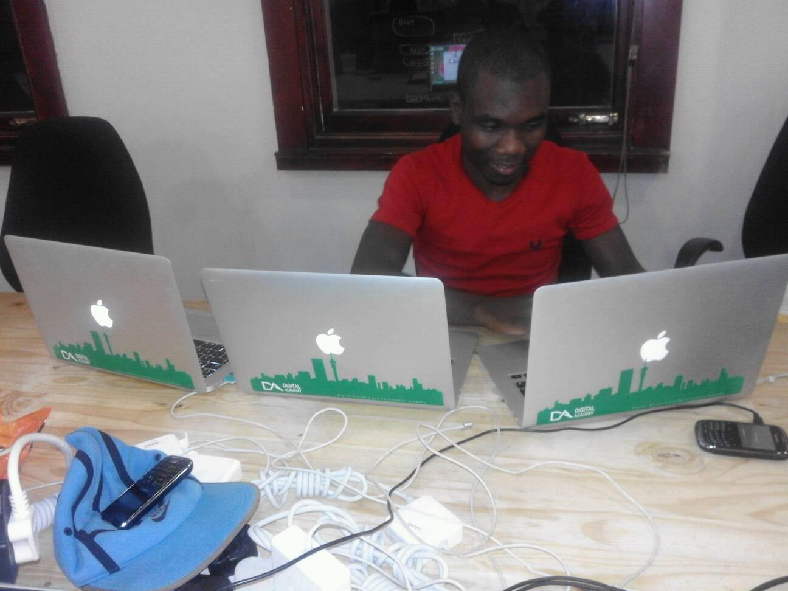

<ion-header>
  <ion-navbar>
    <button ion-button menuToggle>
      <ion-icon name="menu"></ion-icon>
    </button>
    <ion-title>Maxify</ion-title>
  </ion-navbar>
</ion-header>

<ion-content class="cards-bg">

    <ion-card >

        

        <ion-item>
          <ion-icon name="pin" item-start large></ion-icon>
          <h2>Current Location</h2>
          <p>{{currentAddress_lat}}</p>
        </ion-item>

        <ion-item  *ngIf="latitude==null">
          <ion-label floating>Destnation</ion-label>
          <ion-input type="text" id="txtHome" ></ion-input>
        </ion-item>
        <agm-map [latitude]="latitude" [longitude]="longitude" [scrollwheel]="false" [zoom]="zoom">
            <agm-marker [latitude]="latitude" [longitude]="longitude"></agm-marker>
          </agm-map>
        <ion-item *ngIf="latitude">
          <ion-icon name="locate" item-start large></ion-icon>

          <h2>Destnation</h2>
          <p>{{destinationAddress}}</p>
        </ion-item>
<!--
        <ion-item>

          <button ion-button icon-start clear item-end>
            <ion-icon name="navigate"></ion-icon>
            Maxify
          </button>
        </ion-item> -->
        <ion-item *ngIf="latitude">
            <ion-row>
              <ion-col>
              <ion-icon  item-start name='md-bicycle'></ion-icon>
              <p  >Lite</p>
              <p >R10</p>
            </ion-col>
            <ion-col>
                <ion-icon   item-start name='ios-car'></ion-icon>
                <p >Maxi</p>
                <p  >R23</p>
            </ion-col>
            <ion-col>
              <ion-icon color="subtle"  item-start name='ios-car-outline'></ion-icon>
              <p>Mega</p>
              <p>R70</p>
            </ion-col>
            </ion-row>
            </ion-item>
            <ion-item actions *ngIf="latitude">
                <span ion-text item-start color="secondary" class="item-bold">6 min</span>
                <span ion-text item-start color="primary"><h6>arrival time</h6></span>
                <button ion-button color="secondary" css="large" clear item-end icon-start>
                  <ion-icon  css="large" name='md-checkmark-circle'></ion-icon>
                  <span  css="large item-bold" color="secondary">Request Maxify</span>
                </button>
              </ion-item>
      </ion-card>

  <div #map id="map"></div>

    <ion-card class="adv-map" position="bottom" *ngIf="latitude">


    </ion-card>


</ion-content>
